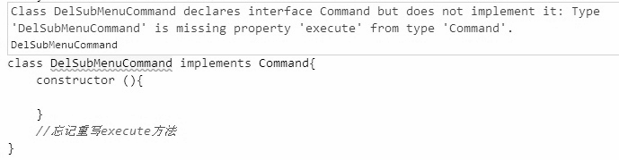

interface的命令模式虽然在大多数时候interface给JavaScript开发带来的价值并不像在静态类型语言中那么大，但如果我们正在编写一个复杂的应用，还是会经常怀念接口的帮助。
下面我们以基于命令模式的示例来说明interface如何规范程序员的代码编写，这段代码本身并没有什么实用价值，在JavaScript中，我们一般用闭包和高阶函数来实现命令模式。
假设我们正在编写一个用户界面程序，页面中有成百上千个子菜单。因为项目很复杂，我们决定让整个程序都基于命令模式来编写，即编写菜单集合界面的是某个程序员，而负责实现每个子菜单具体功能的工作交给了另外一些程序员。
那些负责实现子菜单功能的程序员，在完成自己的工作之后，会把子菜单封装成一个命令对象，然后把这个命令对象交给编写菜单集合界面的程序员。他们已经约定好，当调用子菜单对象的execute方法时，会执行对应的子菜单命令。
虽然在开发文档中详细注明了每个子菜单对象都必须有自己的execute方法，但还是有一个粗心的JavaScript程序员忘记给他负责的子菜单对象实现execute方法，于是当执行这个命令的时候，便会报出错误，代码如下：
<html>
<body>
<button id="exeCommand">执行菜单命令</button>
<script>
var RefreshMenuBarCommand = function(){};
RefreshMenuBarCommand.prototype.execute = function(){
console.log( '刷新菜单界面' );
};
var AddSubMenuCommand = function(){};
AddSubMenuCommand.prototype.execute = function(){
console.log( '增加子菜单' );
};
var DelSubMenuCommand = function(){};
/*****没有实现DelSubMenuCommand.prototype.execute *****/
// DelSubMenuCommand.prototype.execute = function(){
// };
var refreshMenuBarCommand = new RefreshMenuBarCommand(),
addSubMenuCommand = new AddSubMenuCommand(),
delSubMenuCommand = new DelSubMenuCommand();
var setCommand = function( command ){
document.getElementById( 'exeCommand' ).onclick = function(){
command.execute();
}
};
setCommand( refreshMenuBarCommand );
// 点击按钮后输出："刷新菜单界面"
setCommand( addSubMenuCommand );
// 点击按钮后输出："增加子菜单"
setCommand( delSubMenuCommand );
// 点击按钮后报错。Uncaught TypeError: undefined is not a function
</script>
</body>
</html>
为了防止粗心的程序员忘记给某个子命令对象实现execute方法，我们只能在高层函数里添加一些防御性的代码，这样当程序在最终被执行的时候，有可能抛出异常来提醒我们，代码如下：
var setCommand = function( command ){
document.getElementById( 'exeCommand' ).onclick = function(){
if ( typeof command.execute !== 'function' ){
throw new Error( "command对象必须实现execute方法" );
}
command.execute();
}
};
如果确实不喜欢重复编写这些防御性代码，我们还可以尝试使用TypeScript来编写这个程序。
TypeScript是微软开发的一种编程语言，是JavaScript的一个超集。跟CoffeeScript类似，TypeScript代码最终会被编译成原生的JavaScript代码执行。通过TypeScript，我们可以使用静态语言的方式来编写JavaScript程序。用TypeScript来实现一些设计模式，显得更加原汁原味。
TypeScript目前的版本还没有提供对抽象类的支持，但是提供了interface。下面我们就来编写一个TypeScript版本的命令模式。
首先定义Command接口：
interface Command{
execute: Function;
}
接下来定义RefreshMenuBarCommand、AddSubMenuCommand和DelSubMenuCommand这3个类，它们分别都实现了Command接口，这可以保证它们都拥有execute方法：
class RefreshMenuBarCommand implements Command{
constructor (){
}
execute(){
console.log( '刷新菜单界面' );
}
}
class AddSubMenuCommand implements Command{
constructor (){
}
execute(){
console.log( '增加子菜单' );
}
}
class DelSubMenuCommand implements Command{
constructor (){
}
// 忘记重写execute方法
}
var refreshMenuBarCommand = new RefreshMenuBarCommand(),
addSubMenuCommand = new AddSubMenuCommand(),
delSubMenuCommand = new DelSubMenuCommand();
refreshMenuBarCommand.execute(); // 输出：刷新菜单界面
addSubMenuCommand.execute(); // 输出：增加子菜单
delSubMenuCommand.execute(); // 输出：Uncaught TypeError: undefined is not a function
如图21-1所示，当我们忘记在DelSubMenuCommand类中重写execute方法时，TypeScript提供的编译器及时给出了错误提示。

图 21-1
这段TypeScript代码翻译过来的JavaScript代码如下：
var RefreshMenuBarCommand = (function () {
function RefreshMenuBarCommand() {
}
RefreshMenuBarCommand.prototype.execute = function () {
console.log('刷新菜单界面');
};
return RefreshMenuBarCommand;
})();
var AddSubMenuCommand = (function () {
function AddSubMenuCommand() {
}
AddSubMenuCommand.prototype.execute = function () {
console.log('增加子菜单');
};
return AddSubMenuCommand;
})();
var DelSubMenuCommand = (function () {
function DelSubMenuCommand() {
}
return DelSubMenuCommand;
})();
var refreshMenuBarCommand = new RefreshMenuBarCommand(),
addSubMenuCommand = new AddSubMenuCommand(),
delSubMenuCommand = new DelSubMenuCommand();
refreshMenuBarCommand.execute();
addSubMenuCommand.execute();
delSubMenuCommand.execute();